Conveyor Camera Monitor
Inspección visual automática con IA para líneas de producción industriales
Alejandro Rioja Chocrón
Trabajo de Fin de Máster (TFM)
Máster en Desarrollo con IA - 2ª Edición
BIGschool | Entrega: 20/07/2026
Índice
- El Problema y la Solución
- Descripción General del Proyecto
- Hardware Industrial
- Stack Tecnológico (Backend & IA)
- Stack Tecnológico (Infra & Calidad)
- IA en el Desarrollo del Proyecto
- Arquitectura del Sistema
- Flujo de Producción
- Inteligencia Artificial (Anomalib)
- Backend & API REST
- Calidad de Código y Testing
- Infraestructura & Docker
- Buenas Prácticas y Seguridad
- Conclusiones y Entrega
El Problema en Industria 4.0
Descripción General del Proyecto
Conveyor Camera Monitor es un sistema de inspección visual automática para líneas de producción industriales. Integra un PLC industrial, visión por computador, un modelo de IA entrenado por mí mismo con detección de anomalías (PatchCore) y una interfaz web de control en tiempo real. Además, todo el desarrollo ha sido potenciado con IA generativa (Kimi K2.6) como asistente de código.
Flujo de trabajo completamente automático con supervisión humana en NG

Hardware Industrial PARTE I
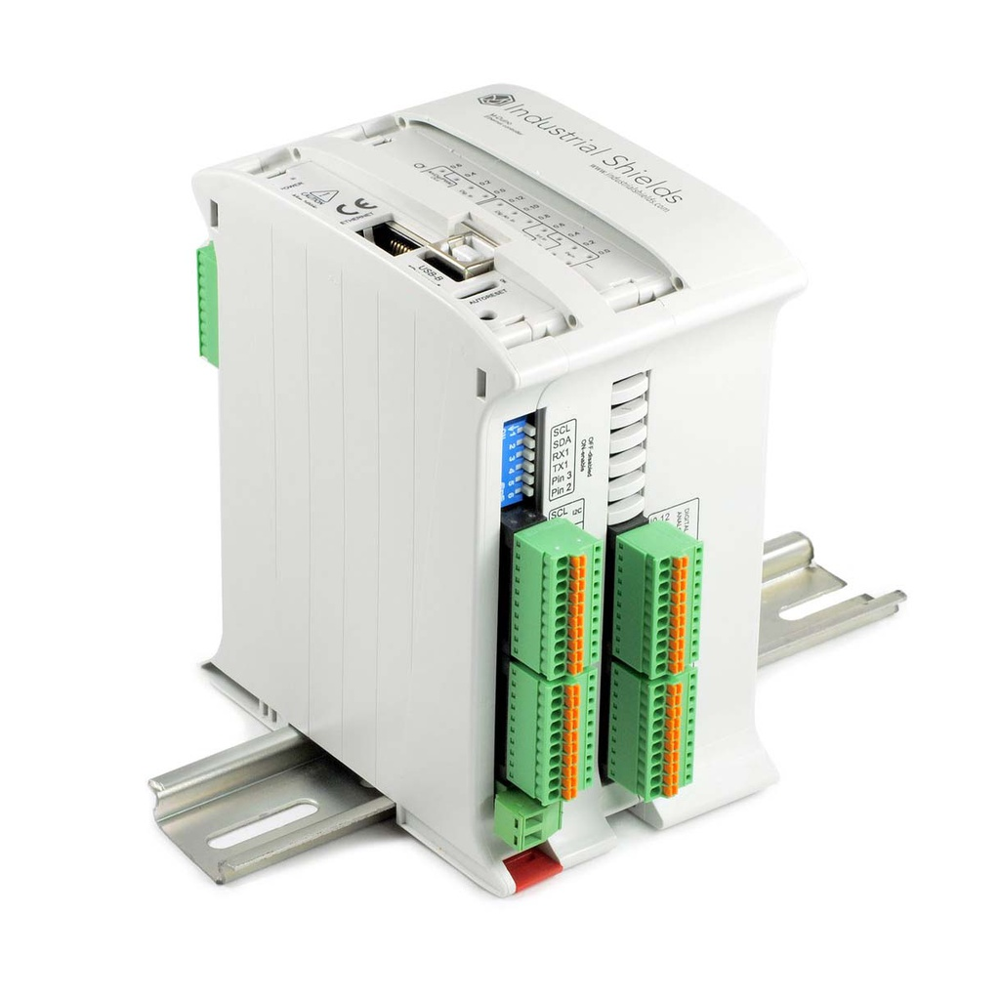
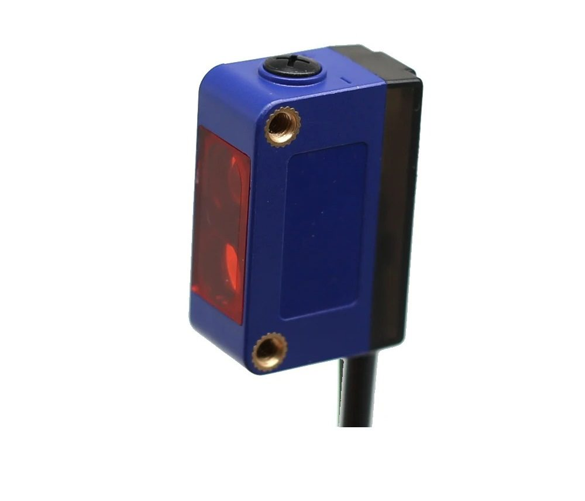
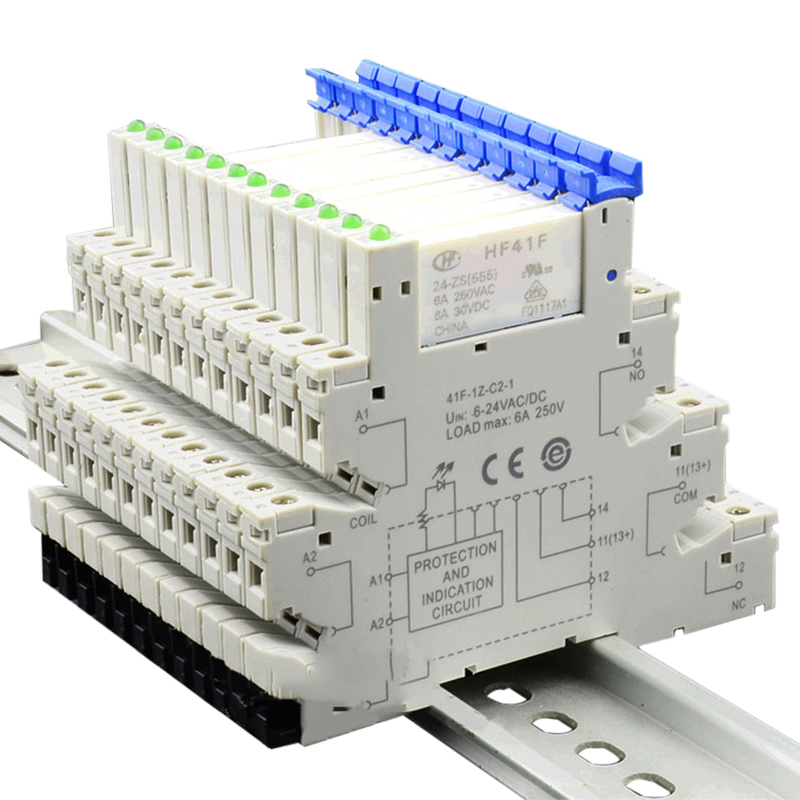
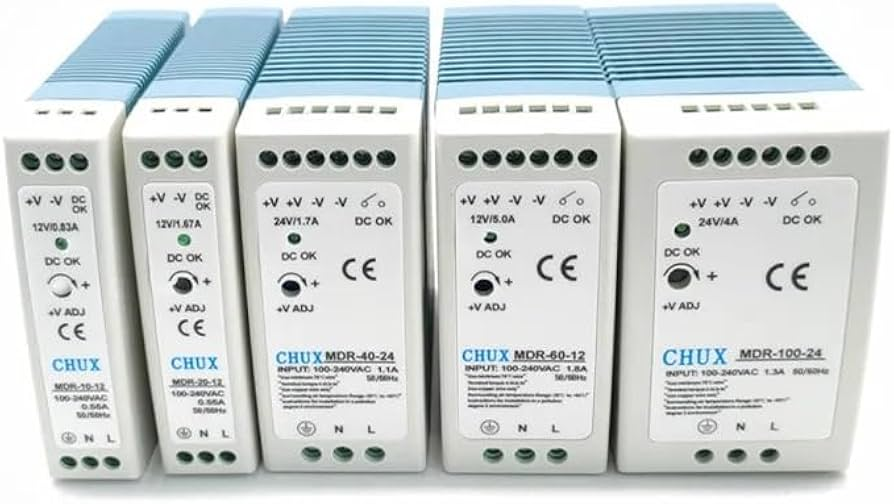

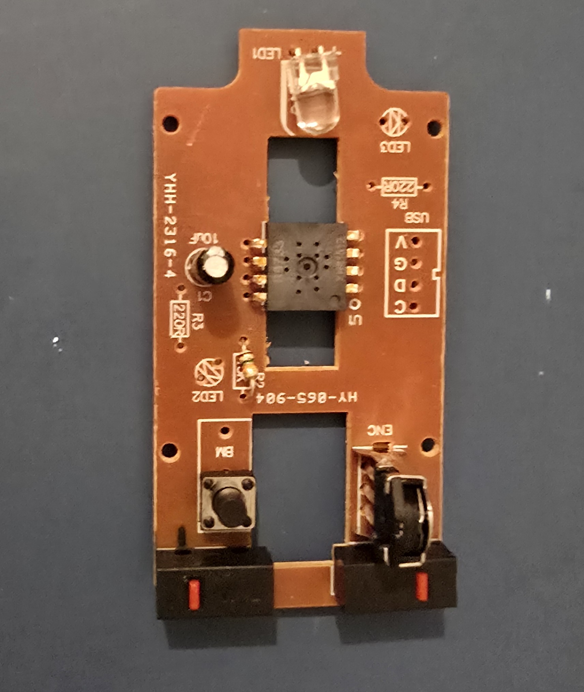
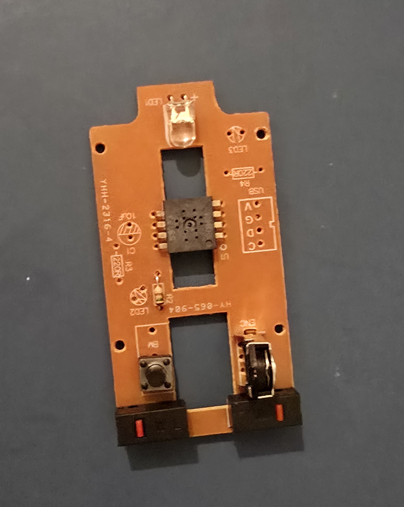
Hardware de Visión PARTE II
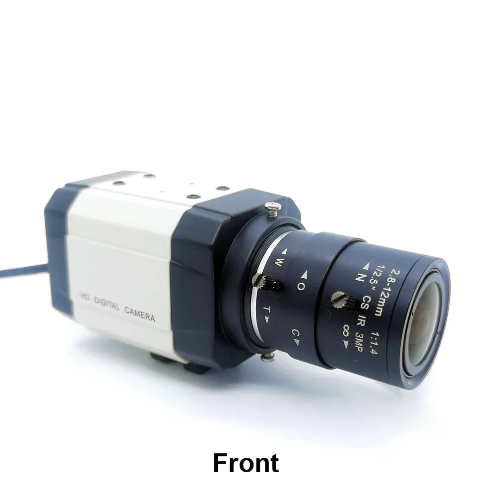
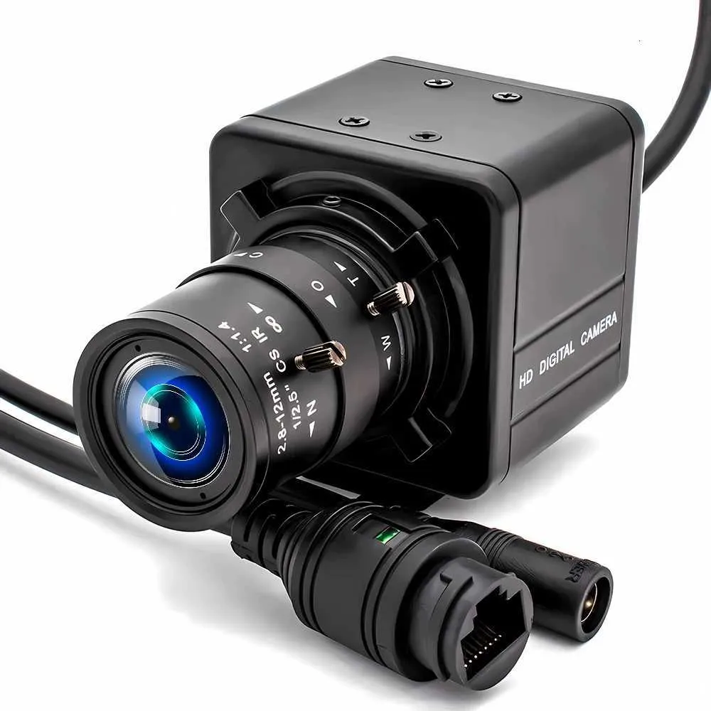
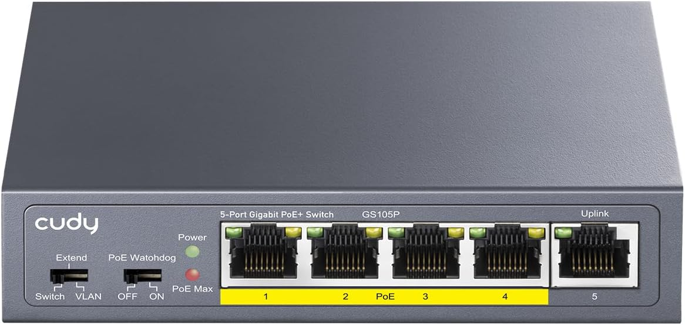
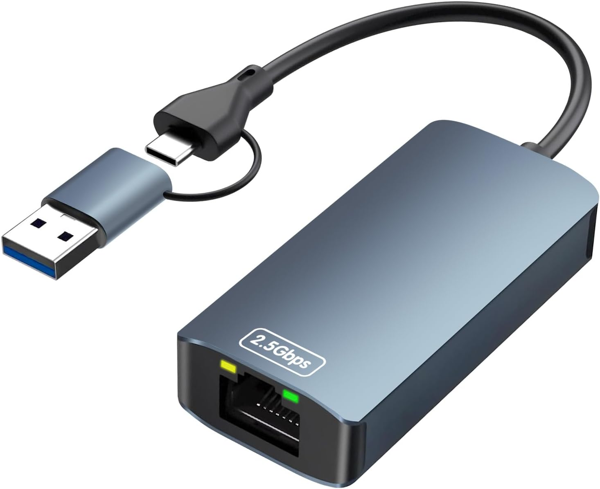
Stack Tecnológico Backend & IA
Stack Tecnológico Infra & Calidad
IA en el Desarrollo del Proyecto Kimi K2.6
Todo el ciclo de vida del proyecto ha sido potenciado con inteligencia artificial generativa. Desde el diseño de la arquitectura hasta la generación de esta presentación, el asistente Kimi K2.6 (OpenCode) integrado en VS Code ha actuado como copiloto de desarrollo.
Arquitectura del Sistema
Relé Q0.0
Cinta
M-Duino 21+
Sketch Arduino (.ino)
Coil 0 / 1
50 ms
OpenCV
PatchCore GPU
Estado Producción
Imágenes
Preview Webcam
Heatmap OK/NG
CCTV WebRTC
Máquina de Estados de Producción
├─ ok → cooldown → waiting
└─ ng → waiting (manual)
Flujo de Producción Paso a Paso
Inteligencia Artificial
Detección de Anomalías con Anomalib (Intel) + IA Generativa
Backend & API REST
POST /api/trigger
POST /api/ok
POST /api/ng
POST /api/release
POST /api/auto-predict/toggle
POST /api/train/save-ok
POST /api/train/save-ng
POST /api/train/start
GET /api/stream/preview
POST /api/stream/capture-ok
POST /api/stream/capture-ng
GET /api/captures/{filename}
GET /api/heatmaps/{filename}
Todos los endpoints están documentados automáticamente en Swagger UI: http://localhost:8000/docs
Calidad de Código
Testing Automatizado
| Archivo | Tests | Cobertura |
|---|---|---|
| test_config.py | 1 | Validación de constantes de red |
| test_find_plc.py | 4 | Escaneo de red y conectividad Modbus |
| test_camera.py | 5 | Gestión de webcam con mocks de OpenCV |
| test_modbus_client.py | 3 | Inicialización, escrituras y ciclo de vida |
| test_trainer.py | 8 | Calibración, guardado de datasets y preparación |
| test_main.py | 17 | Tests de integración sobre todos los endpoints |
cd backend
.\venv\Scripts\python.exe -m pytest --cov=. --cov-report=term-missing tests/Infraestructura & Docker
- mediamtx: bluenviron/mediamtx (RTMP in / WebRTC out)
- nginx: proxy web estático y redirección de puertos
Buenas Prácticas & Seguridad
config.py. Fácil adaptación a nuevas redes sin tocar lógica de negocio.Instalación y Ejecución
# Requisitos clave
- Python 3.12 + GPU NVIDIA (CUDA 12.4)
- Webcam USB + M-Duino 21+ conectado por Ethernet
- Cámara IP PoE en red link-local (opcional para CCTV)
Funcionalidades Principales
- Detección automática de piezas vía sensor industrial
- Parada inmediata de la cinta por PLC
- Captura 4MP con precalentamiento y estabilización
- Inferencia IA en GPU en 50-100 ms
- Calibración automática de umbrales y AUROC
- Heatmaps superpuestos sobre la imagen original
- Control Modbus TCP para arrancar/parar cinta
- CCTV en vivo WebRTC de cámara IP PoE
- Entrenamiento interactivo OK/NG desde el frontend
- API REST completa con Swagger UI
- 38 tests automatizados con cobertura
- Despliegue híbrido Docker + nativo
- Desarrollo asistido por IA generativa (Kimi K2.6)
Valor Personal & Conocimientos Aplicados
Entrega del TFM Checklist
- Documentación completa (README.md + AGENTS.md)
- Repositorio GitHub público con código fuente
- Despliegue local en funcionamiento (URL localhost)
- Slides de presentación (Reveal.js)
- Vídeo explicativo con captura de pantalla
- Tests, calidad de código y cobertura
- Docker + infraestructura documentada
- Uso intensivo de IA generativa en todo el ciclo de desarrollo
Fecha de entrega: 20 de julio de 2026
Anexo Sistema en Funcionamiento
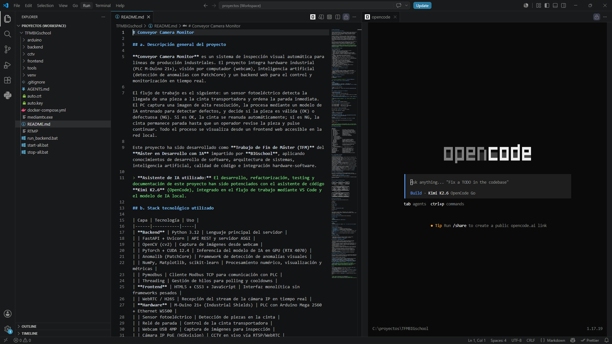
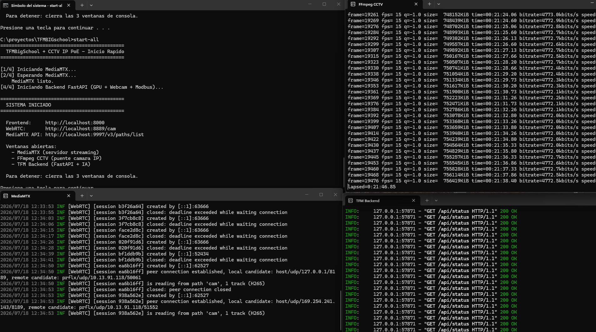
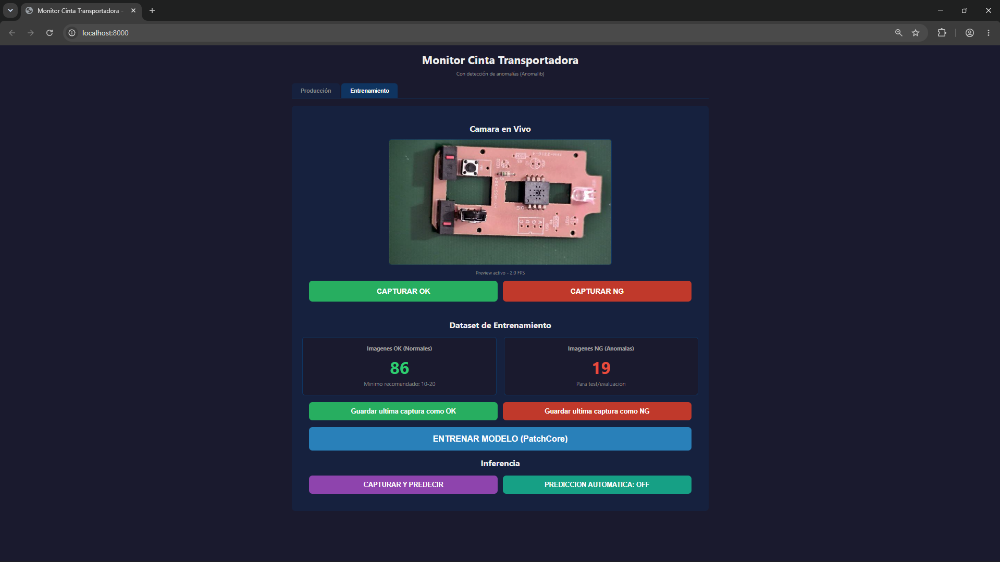
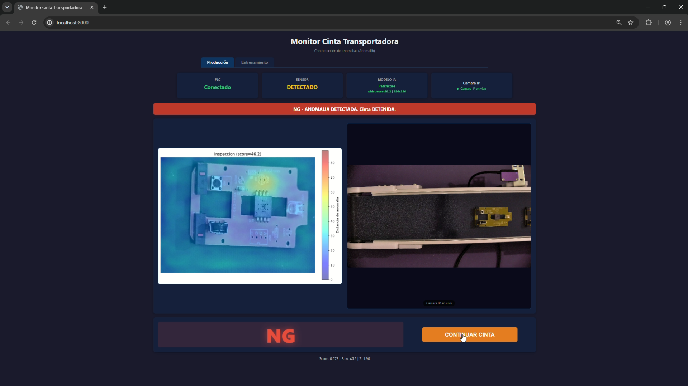
Gracias
Conveyor Camera Monitor
Alejandro Rioja Chocrón
TFM - Máster en Desarrollo con IA (2ª Edición)
BIGschool | Julio 2026